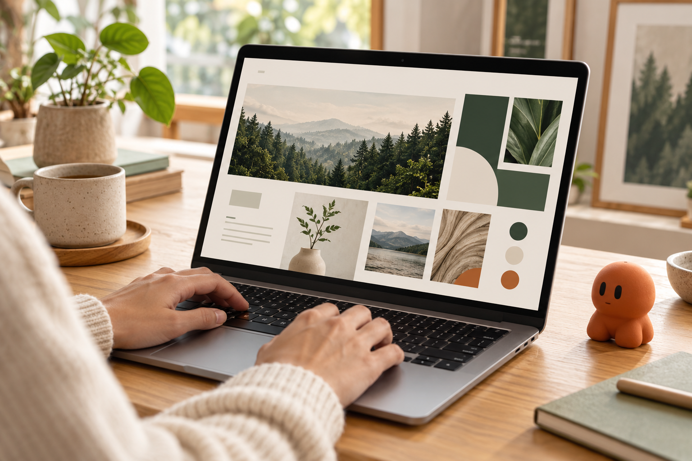
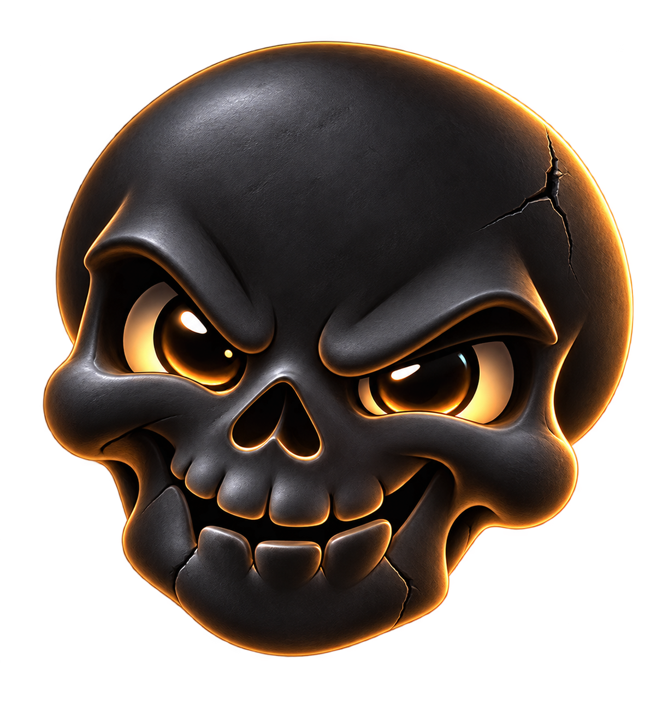
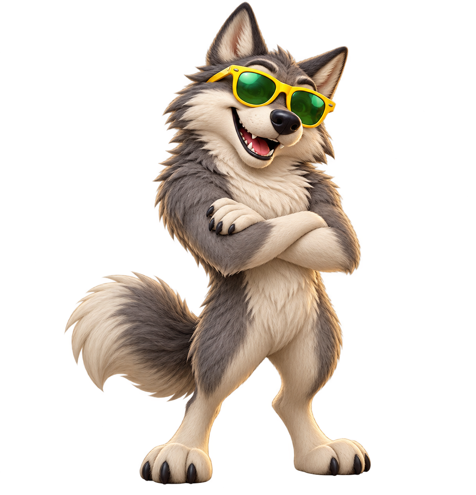

Build an app
Start with a visible first version.
Use example →Option C · Mission first
I’m glad you’re here. Let’s find a useful next step together.
Your intended use
App development: Vercel and Supabase connections are not implemented in this demo.


Wolf · yellow frames, green lensesYour companions
Each companion keeps their own conversations and missions.
Morrow / Workspace
An editable target for the plan, not a scheduled job.

Start with a visible first version.
Use example →
Explore a question and share findings.
Use example →
Agree what matters and when to check.
Use example →Morrow / Mission
A small place to collect notes and see the next step.
Mission chat
2 of 3 milestones · first version taking shape
First screen outline
A readable preview with example notes. Work is still active.
This mission would need permission before connecting to an external project.
Project space preview
The mission is paused while you review this deliverable.
Resume when you want this mission to continue from the same point.
Goal, chat, progress and deliverables stay together. Stages and subtasks open only when needed.